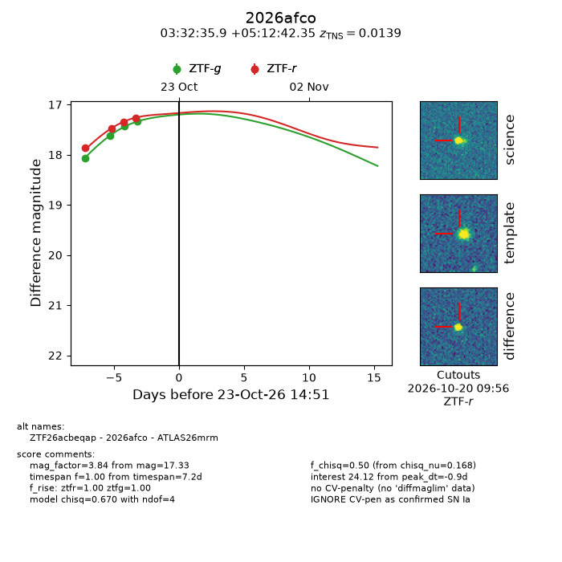
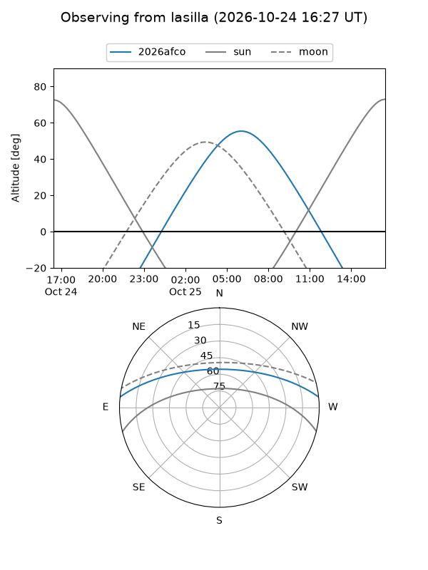
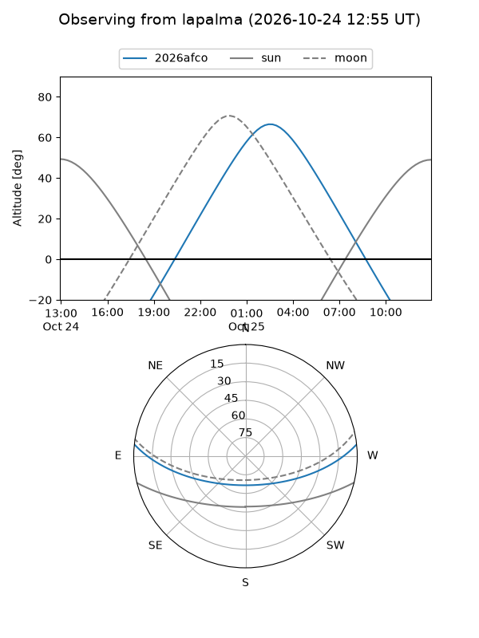
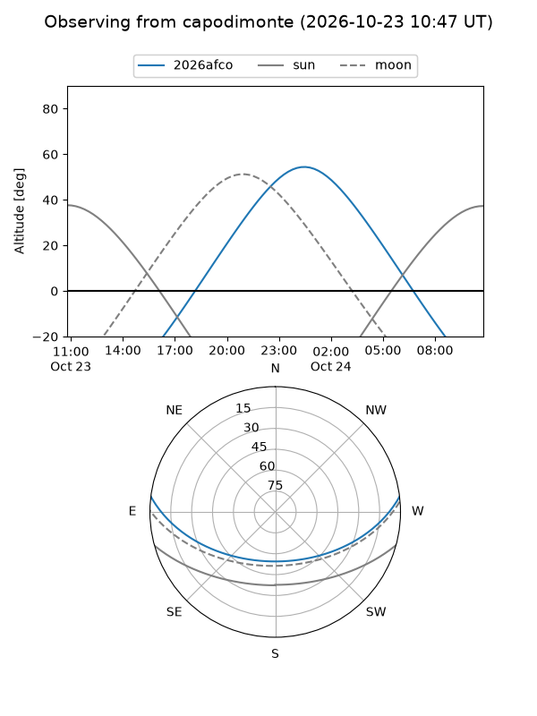
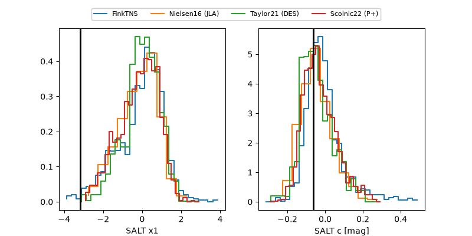

2026afco
Target 2026afco at 2026-10-23 14:54
Aliases and brokers:
FINK-ZTF: ztf.fink-portal.org/ZTF26acbeqap
Lasair-ZTF: lasair-ztf.lsst.ac.uk/objects/ZTF26acbeqap
ALeRCE-ZTF: alerce.online/object/ZTF26acbeqap
YSE-PZ: ziggy.ucolick.org/yse/transient_detail/2026afco
TNS name: wis-tns.org/object/2026afco
Direct TNS query: direct search
alt names
ZTF26acbeqap (ztf,fink_ztf)
2026afco (tns,yse)
ATLAS26mrm (atlas)
Coordinates:
equatorial (ra, dec) = 53.1498,+5.21176
equatorial (HMS+DMS) = 03:32:35.95,+05:12:42.35
galactic (l, b) = (179.3717,-39.39302)
Flags:
TNS type: SN Ia
TNS redshift: 0.0139
peak dt: -0.9
Photometry:
last ztfg=17.33, ztfr=17.26
4 ztfg, 4 ztfr detections
Lightcurve

Visibility



Additional plots
